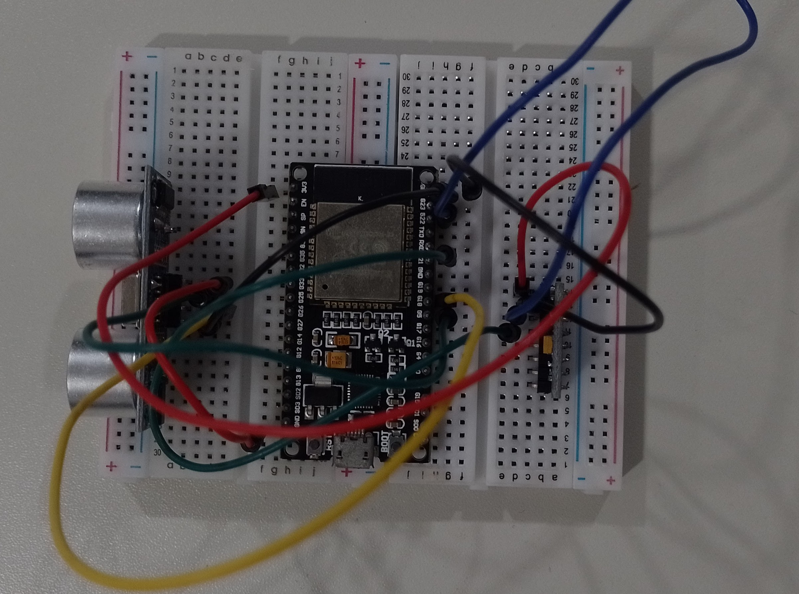
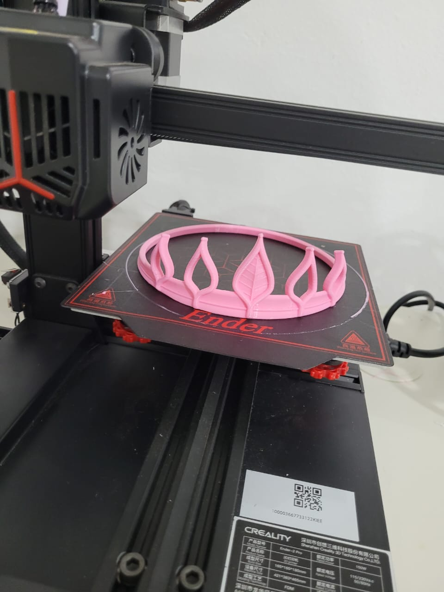
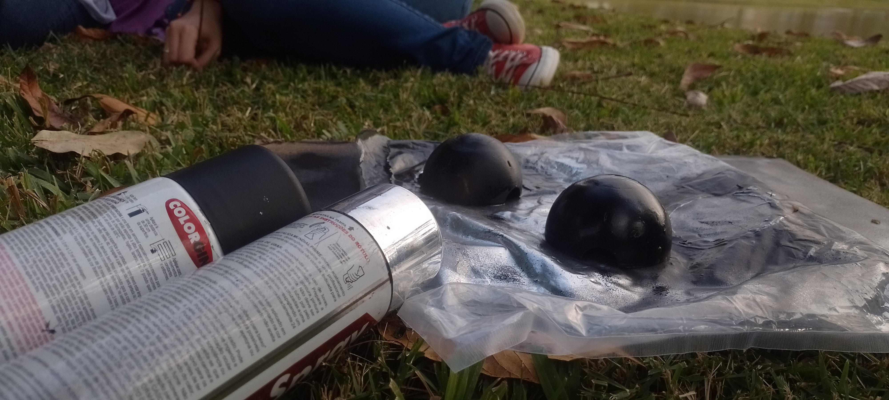
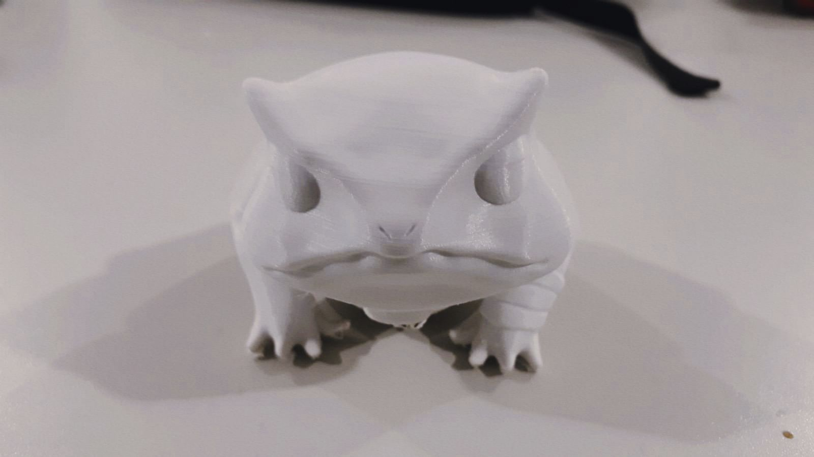
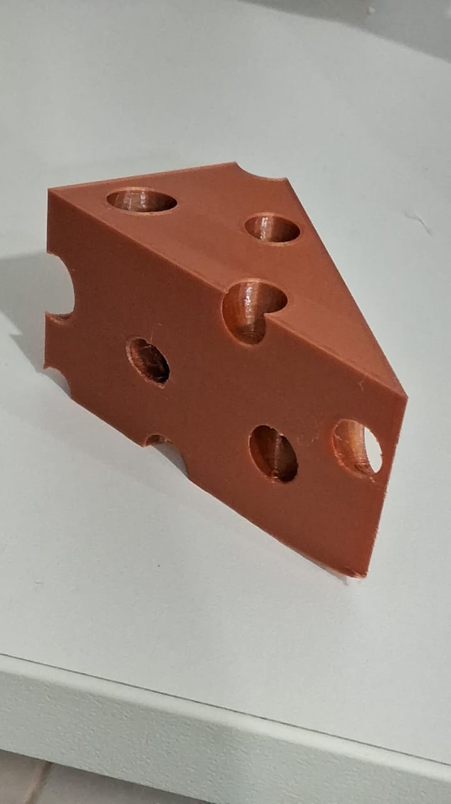

Lavínia é uma jovem cuja trajetória é marcada por autonomia, criatividade e paixão pelas artes. Natural do
Espírito Santo, cursou o ensino médio integrado ao técnico em Informática no Instituto Federal do Espírito
Santo (IFES), campus de Alegre, onde começou a desenvolver habilidades tanto na área da tecnologia quanto em
múltiplas expressões artísticas.
Apaixonada por música, artesanato e tudo que envolve arte, Lavínia encontrou em suas múltiplas paixões uma
forma de expressão singular. É talentosa em diversas frentes: toca vários instrumentos, canta com
sensibilidade e ainda se dedica ao crochê com notável habilidade. Além disso, gosta de criar receitas,
unindo técnica e criatividade na culinária. Seu espírito artístico é complementado pela companhia fiel de
sua gata chamada Mikasa, que a acompanha em sua rotina e inspira momentos de tranquilidade.
Desde os 15 anos, Lavínia mora sozinha, o que lhe conferiu maturidade precoce e um senso de responsabilidade
admirável. Recentemente, mudou-se para Vila Velha, onde ingressou no curso de Sistemas de Informação na
Universidade Vila Velha (UVV). A escolha pelo curso reflete sua afinidade com a tecnologia, mas também seu
desejo por liberdade: Lavínia enxerga na área uma oportunidade para levar uma vida nômade, trabalhando
remotamente enquanto viaja e conhece novos lugares, culturas e pessoas.
Hoje, com uma base sólida em tecnologia e um coração voltado para a arte, Lavínia representa uma fusão
equilibrada entre lógica e sensibilidade. Seu caminho é promissor, e seu perfil multifacetado promete levar
inovação, criatividade e autenticidade por onde quer que ela passe.
Durante os anos de 2022 e 2023, atuei como voluntária em um laboratório maker no IFES – Campus de Alegre,
instituição onde também cursei o Ensino Médio. Esse período foi marcado por uma intensa vivência prática e
aprendizado multidisciplinar. No laboratório, participei de diversos projetos, desenvolvendo habilidades
técnicas e interpessoais em um ambiente colaborativo e criativo.
Tive a oportunidade de trabalhar com impressão 3D, executar pequenas tarefas cotidianas como preparar café e
manter o espaço organizado, além de aproveitar momentos de descontração ouvindo música com colegas. Uma das
experiências mais marcantes foi aprender a soldar componentes eletrônicos, o que ampliou significativamente
meu interesse e domínio sobre tecnologias embarcadas.
Durante esse estágio voluntário, também iniciei um projeto voltado para a Feira de Ciências (FECINC), cujo
objetivo era desenvolver uma luva tradutora de Libras utilizando Arduino e ESP32. Embora o projeto não tenha
sido concluído devido à preparação para o ENEM, ele teve um papel fundamental no meu aprofundamento em
eletrônica e programação, além de reforçar meu interesse por soluções tecnológicas com impacto social.
Além dos aprendizados técnicos, o convívio diário no laboratório me proporcionou a construção de laços
valiosos. Fiz amizades incríveis com colegas e, de forma muito especial, desenvolvi vínculos de amizade e
admiração com os próprios professores. Essa experiência foi não apenas enriquecedora, mas também
inesquecível. Tenho um enorme carinho por esse período da minha vida e guardo com saudade tudo o que vivi
ali.
Durante os três anos em que estive no IFES – Campus de Alegre, tive a honra de participar da banda fanfarra
da instituição, uma experiência que marcou profundamente minha trajetória pessoal e acadêmica. Logo no
início, em 2022, o grupo contava com poucos integrantes, como mostro na primeira foto que registro com
carinho. Apesar das limitações, o entusiasmo e a dedicação sempre estiveram presentes. Ao longo do tempo, o
grupo cresceu de forma surpreendente, culminando em um momento inesquecível: nossa apresentação com mais de
70 integrantes, registrada na segunda foto, que foi reconhecida com nota máxima — um verdadeiro orgulho
coletivo.
Participar da fanfarra foi, para mim, muito mais do que fazer parte de uma atividade extracurricular. A
música se tornou um refúgio e uma forma de expressão que me ajudou a lidar com os desafios emocionais e a
manter o equilíbrio durante o período do ensino médio. Cada ensaio, cada apresentação e cada encontro com os
colegas da banda foram fundamentais para o meu bem-estar.
As memórias que guardo dessa vivência são, sem exceção, positivas. A fanfarra me proporcionou não apenas
crescimento pessoal e musical, mas também amizades verdadeiras e duradouras — laços que levo comigo com
muito carinho e que, sem dúvida, fazem parte da melhor parte da minha história no IFES. Foi uma fase leve,
significativa e inesquecível.
Durante a Semana Nacional de Ciência e Tecnologia (SNCT) realizada no IFES – Campus de Alegre, tive a
oportunidade de desenvolver e apresentar um projeto voltado para a temática da inteligência artificial. O
trabalho consistiu na criação de uma versão modificada do clássico jogo do dinossauro do Google, programada
em Python, com um diferencial empolgante: o dinossauro era controlado automaticamente por uma inteligência
artificial, capaz de jogar sozinho com uma performance impressionante.
A experiência de apresentar esse projeto ao público foi extremamente gratificante, especialmente por contar
com a presença de muitas crianças e adolescentes que visitavam a feira. Era visível o entusiasmo no olhar de
cada uma delas ao perceberem que o “dinossaurinho” estava jogando sem ajuda humana — o que tornava a
explicação sobre IA ainda mais divertida e acessível. As reações eram espontâneas, muitas vezes engraçadas,
e tornaram o momento leve, educativo e inesquecível.
Esse projeto me proporcionou não apenas o aprofundamento prático em programação e conceitos de inteligência
artificial, mas também o exercício da comunicação e do ensino, ao compartilhar conhecimento com o público de
maneira lúdica e envolvente. Sem dúvida, foi uma experiência marcante na minha trajetória acadêmica, unindo
tecnologia, criatividade e interação com a comunidade.
Durante minha trajetória no IFES – Campus de Alegre, vivi experiências artísticas profundamente marcantes,
que contribuíram não apenas para meu desenvolvimento criativo, mas também pessoal. Uma dessas vivências está
registrada na primeira foto, em um momento especial ao lado de amigos e da nossa professora de artes. Na
ocasião, realizamos uma confraternização repleta de música boa, comida caseira e, sobretudo, expressão
artística. Juntos, transformamos as paredes do espaço em uma verdadeira galeria viva, preenchida com obras
criadas por nós mesmos. Foi uma tarde de muita alegria, em que cada um deixou um pouco de si naquele lugar.
Hoje, sei que uma parte nossa permanece ali, eternizada nas cores e formas que ajudamos a compor.
Outra experiência significativa está ilustrada na segunda foto, tirada durante a SNCT, onde tive a
oportunidade de me apresentar como vocalista da banda "Coquetel Molotov". Essa banda estudantil foi uma
verdadeira porta de entrada para novas vivências, abrindo caminhos para me expressar musicalmente de forma
mais confiante. Apesar de já possuir experiência anterior com apresentações em ambientes como a igreja,
subir ao palco diante de colegas da mesma faixa etária e com senso crítico mais aguçado foi um desafio
diferente. Essa vivência me ajudou a vencer a timidez e fortalecer minha presença em público, ao mesmo tempo
em que me proporcionou momentos incríveis, que certamente levarei comigo por toda a vida.
Durante meu último ano no IFES, desenvolvi em grupo um Trabalho de Conclusão de Curso com muita dedicação e orgulho. O projeto consistiu na criação de um site dinâmico, onde pude aplicar meus conhecimentos em HTML, CSS e lógica de programação adquiridos ao longo da formação.